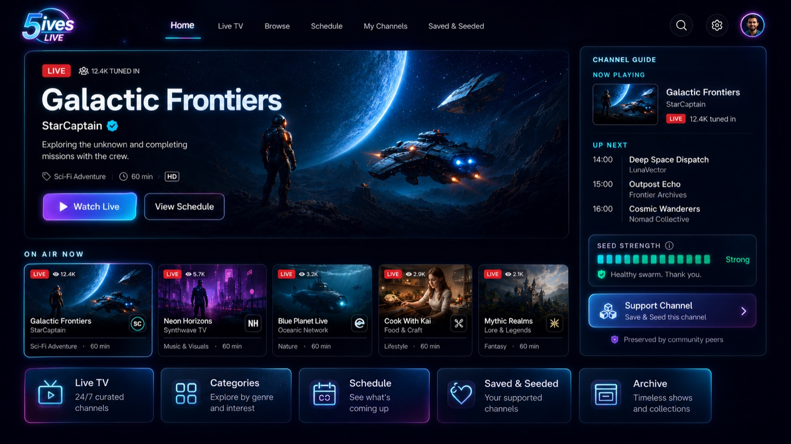

Anyone can run a TV channel now.
5ives LIVE is a desktop app for broadcast-style television made by communities — channels of AI film and openly licensed video on shared schedules, streamed peer-to-peer. You tune in at the live playhead, like real TV. No accounts. No algorithm. No gatekeepers.
Free, early-release software · v0.1.0 beta · no sign-up, ever
Television used to need a network. Now it needs an audience.
Broadcast TV was always a great idea — shared schedules, appointment viewing, channels with a point of view. The only problem was who got to run one.
A venue for the new wave of filmmakers
AI tools have put film production in everyone's hands — what's missing is the cinema. 5ives LIVE gives AI-made series, shorts, and experiments a real broadcast: curated channels with schedules, not clips fed to a feed.
Your channel, your rules
Create a channel, set the schedule, publish. Invite collaborators who upload freely — no approval queue, no content review board, no one to say no. Moderation belongs to channel owners, not a platform.
No servers, no middlemen
Video travels peer-to-peer over BitTorrent, and channels publish through plain public Git repos. There is no company in the middle, no upload quota, and nothing to shut down.
Kept alive by its audience
Love a channel? Save & Seed it. Every viewer who seeds becomes part of the broadcast infrastructure — the more people care about something, the stronger its signal gets.

Channels, schedules, and a live playhead — TV as an interface, not a feed.
Watch tonight. Broadcast tomorrow.
Install and tune in
Download the app and channels start playing on their shared schedules. Everyone watching a channel sees the same thing at the same time — you join at the live playhead.
Save & seed what you love
Pin a channel and your machine helps carry its broadcast to other viewers. Seed strength is visible in the guide — a channel's health is its community.
Start broadcasting
Create your personal key (it never leaves your device), make a channel, prepare your videos, and publish a schedule to your own GitHub repo. That's the whole stack.
Get 5ives LIVE
Free, no sign-up. Download, open, and you're watching.
macOS
macOS 12 or later · Intel build, runs on Apple Silicon via Rosetta 2
Download .dmg- Open the .dmg and drag 5ives LIVE to Applications.
- First launch: the app isn't notarized with Apple yet. If macOS blocks it, right-click the app → Open → Open (or allow it under System Settings → Privacy & Security).
Windows
Windows 10 / 11 · x64 installer · WebView2 installs automatically
Download installer- Run the installer. If SmartScreen appears, choose “More info” → “Run anyway” — the app isn't code-signed yet.
- To publish your own videos, install ffmpeg (
winget install ffmpeg). Watching doesn't need it.
Early software, honestly labeled. This is a v0.1.0 alpha — the broadcast equivalent of day one. Expect rough edges, and expect them to get fixed. Your identity key and settings live on your device; there's no server of ours to lose them to.